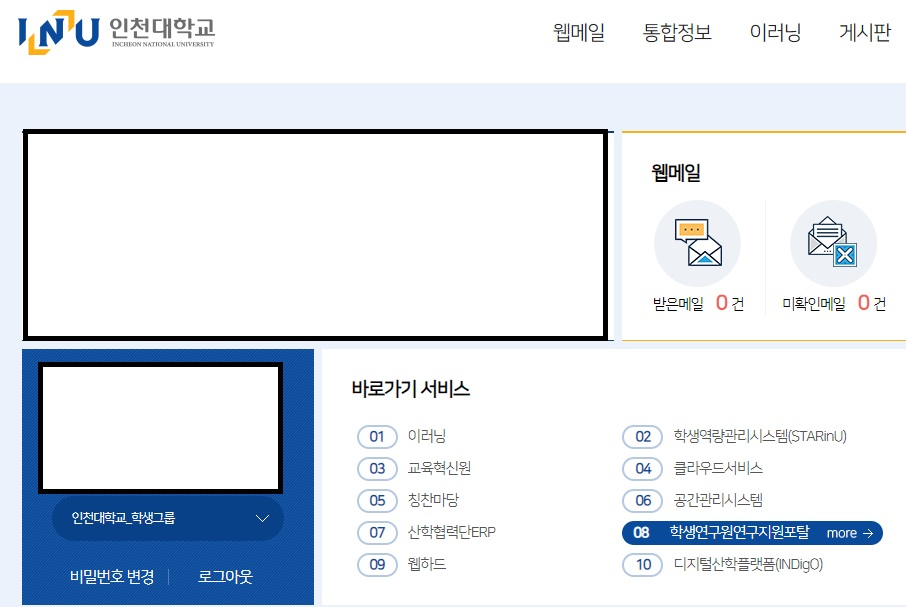
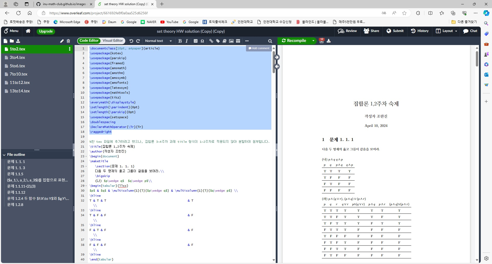

시작하기 전 홍보
저희는 사이트를 하나 갖고 있습니다. 해당 사이트에 여러분들의 발표 자료가 전부 업로드 될 예정이며 다른 선후배님들의 발표자료도 업로드 되어 있습니다.
사이트의 대가 끊기지 않도록 많은 관심 부탁드립니다.
INU MATH CLUB
학생연구원 등록방법 안내드립니다. 이건 여러분들 돈 받는 데에 중요하기도 하니 행정상 지연이 없도록 빨리 해주시길 바랍니다.
학교 포털 - [학생연구원연구지원포털]의 [인건비계좌 변경신청]에서 인건비 계좌를 등록한 후 국가 연구자 번호를 교수님께 말씀드리기.
국가연구자번호 발급방법 pdf는 하단 첨부파일을 이용해주시길 바랍니다.
수식 작성하는데 도움이 되는 문서작성 프로그램 입니다. 보통 대학원생-인문,이공계 가리지 않고-들이 많이 사용하는 프로그램인데요 기본적으로 Pdf로 작성이 되기 때문입니다.
또한 수식을 작성할 때, 워드나 다른 프로그램에서 '수식 입력'을 클릭하고 하지 않고 명령어 -이를 테면 적분 기호는 \integral - 로 작동하기 때문에, 훨씬 간편합니다.
저희는 따로 프로그램을 설치하지 않습니다.
사이트 새탭에서 열기
위 링크에 들어가셔서 구글 계정으로 로그인 하면 끝입니다.
이후 사용하는 것은 사실 저도 보고 배끼는 느낌으로 배운거라서..
제가 작성한 파일을 공유해드릴테니 해당 파일을 보고 따라하면서 작성하면 될 것 같습니다.
파일 공유를 위해서 Overleaf 사이트에 등록된 구글 이메일을 저에게 카톡으로 공유해주시길 바랍니다.
공유가 완료된 다음 세번째 패이지로 넘어가주세요.
제가 기본적인 프로젝트-settheory HW solution. 하나를 보내게 됩니다.
1. 해당 파일 공유를 허가해주세요.
2. 앞으로 latex를 작성하실 때 공유된 파일에서 1to2.tex에서 맨 앞에 package는 그대로 복붙하셔서 쓰셔야합니다. 이게 기본 패키지예요. (\begin document 이전에 있는 package)

3. 7to10.tex 파일에서 \newcommand{\N}{\mathbb{N}} 이러한 것들은 새로운 명령어를 작성하는 command 입니다. 이 부분은 익숙해지고 난 뒤에 쓰시면 됩니다.
기본적인 수식과 기호는 \ 하고 작성할 수 있습니다. 해당 수식과 기호가 정리된 사이트를 보내드리도록 하겠습니다.
1. 주로 사용하는 기호
주로 사용하는 기호들이 들어가있습니다.
2. 모든 기호
모든 기호가 포함된 사이트입니다.
※주의할 점.
수식을 쓰고 싶다면 달러 기호를 사용해야합니다. 만약 함수 f로 표현하고 싶을 때, $f$ 라고 표현하지 않으면 영어 f가 나옵니다.
예시) 만약 내가 A가 B의 부분집합이다. 라고 쓰고 싶다면 $A\subset B$ 라고 작성해주시면 됩니다.
문장 예시)
하고자 하는 말 : A는 B의 부분집합이라고 하자. 그러면 B는 공집합이다.
=>Let $A\subset B$ Then $B=\emptyset$.
엔터 기능은 \\로 작동합니다.
문장 예시)
하고자 하는 말 : A는 B의 부분집합이라고 하자. 그러면 B는 공집합이다.
따라서..
Let $A\subset B$ Then $B=\emptyset$.\\
Thus..
다음은 표만들기와 그래프 그리기입니다.
표는 사이트를 이용해서 만드는 것이 가장 간편합니다.
표만들기 사이트
아래 사이트를 이용해주시길 바랍니다.
그림그리기 사이트
위 사이트 사용을 교수님께서는 지양하셔서 드러내지 않는 것이 좋습니다.
사용방법은 대충 그림 그리신 후 그림을 드래그 하셔서 좌측 상단 menu -> export selection latex 를 누르시면 코드가 나오고 그림을 붙이고 싶은 곳에 붙여넣기 하시면 됩니다.
행렬과 관련한 표현은 다른 문서(선형대수학 문서)를 하나 공유해드릴겁니다. 해당 문서를 읽으시면서 익히시면 됩니다.
새로 보낸 문서의 경우 첫 페이지에 commonly used symbols 라는 설정이 있습니다.
해당 설정은 매크로 기능으로 줄여쓰는 기능이고 익혀두시면 편리하게 사용할 수 있습니다.
이상입니다. 이후 모르는 것 있으면 구글로 충분히 검색해보시고 연락주시면 됩니다.